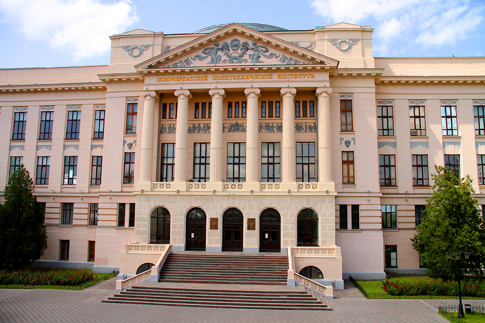
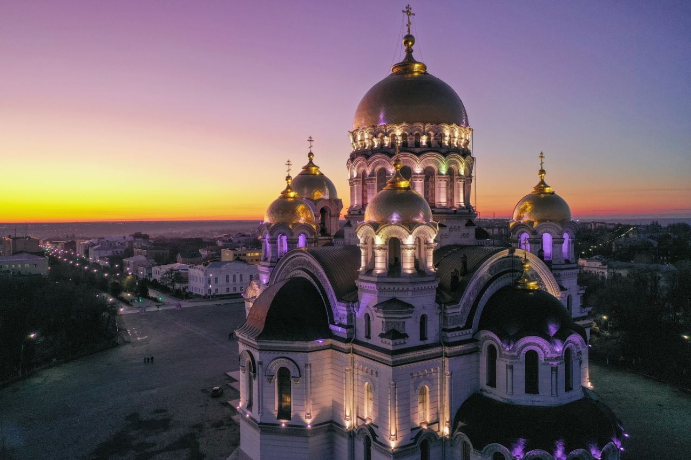
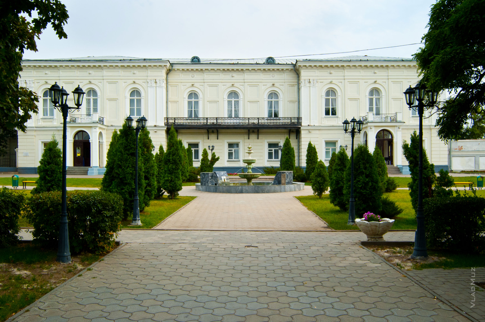
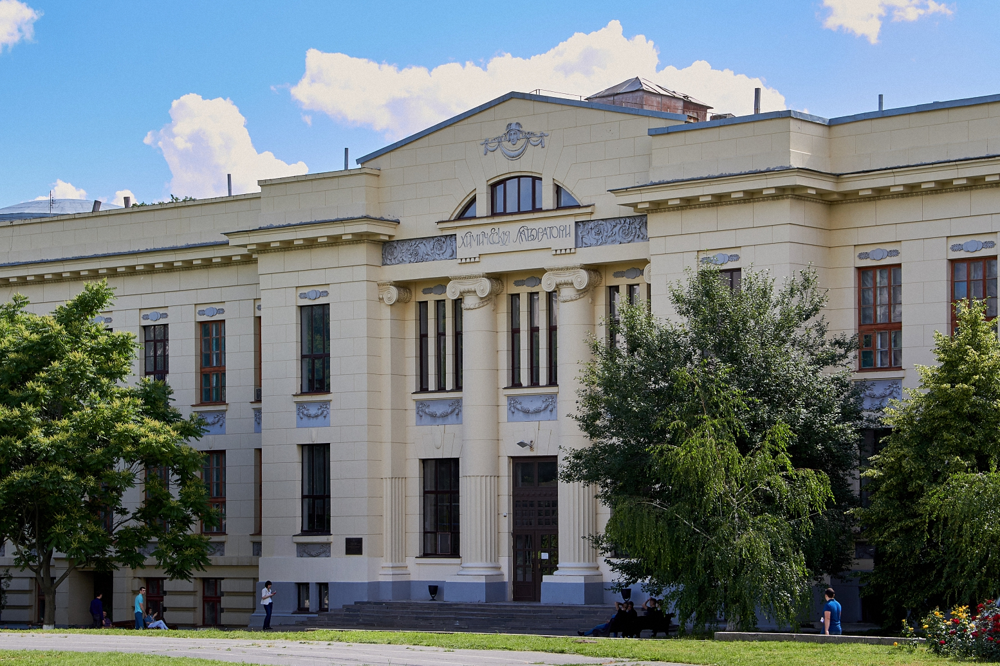
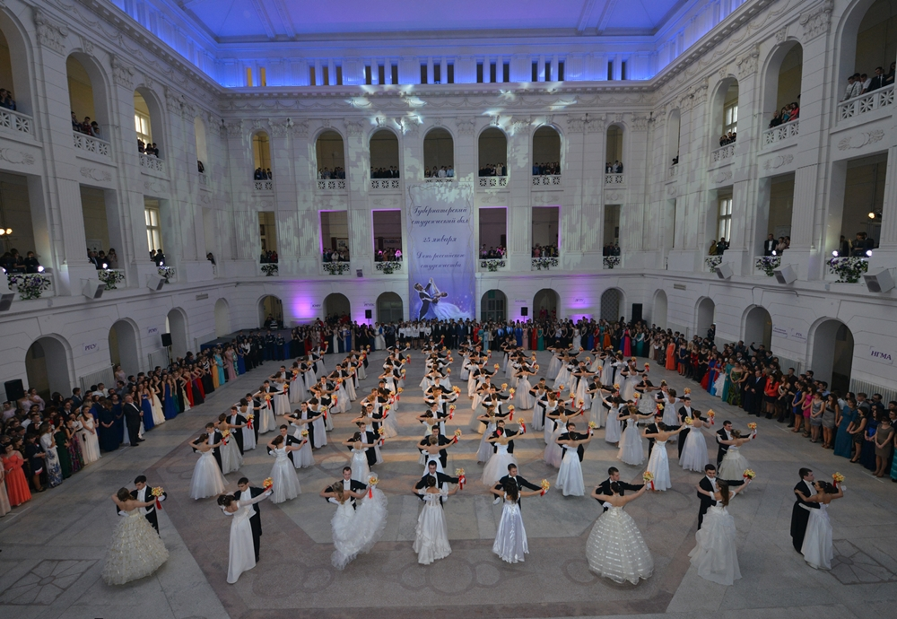

Место проведения
Юбилейное XX Совещание ЭХОС 2022 пройдет в Новочеркасске. Основные мероприятия совещания будут организованы в Южно-Российском государственном политехническом университете (НПИ) имени Платова в здании Технологического факультета и Точке кипения ЮРГПУ(НПИ) зал «Миль».
 Новочеркасск — один из крупнейших южных городов России. Он выделяется как своей славной историей, так и особым обликом: планировкой, архитектурой, уникальными памятниками. Новочеркасск был задуман и основан в 1805 году как новая столица Донского военного округа. Более века это был город донской элиты: военных атаманов и военной администрации, офицеров и чиновников, центр просвещения и культуры.
Южно-Российский государственный политехнический университет (НПИ) имени М.И. Платова образован 18 октября 1907 года с величайшего одобрения Николая II как Донской политехнический институт. ДПИ - первое высшее учебное заведение на Юге России. Университет является единственным вузом в России, созданным по инициативе казаков и для обучения казаков. Половина всех денежных средств, затраченных на открытие ДПИ, была собрана казаками Всевеликого Войска Донского. Первый набор ДПИ состоял из 150 человек, из которых 80 были казаками. За свою историю университет подготовил более 150 тысяч специалистов, высококвалифицированных инженеров, учёных, производственников.
 Чутко откликаясь на требования времени, ЮРГПУ(НПИ) готовит высококвалифицированных инженеров - молодые кадры, которые обладают необходимыми для экономики нового типа ключевыми компетенциями, имеют представление о спектре передовых технологий и способны стать настоящими современными «капитанами производства», успешно решающими комплексные задачи.
Университет гордится своей научной элитой, большое внимание уделяя научной составляющей: в его стенах рождаются и продвигаются уникальные исследования и инновации. Создавая инновации, вуз стремится обеспечить продвижение своих научно-исследовательских разработок, способствуя тем самым импортозамещению в промышленности. И, конечно, первый вуз Юга России следует миссии хранителя культуры и генератора ценностных ориентиров.
